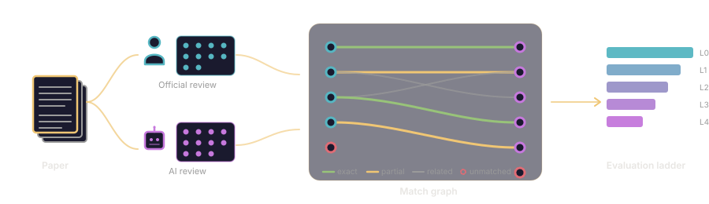

Verdict accuracy collapses the whole review into one number. The ladder preserves the concern-level story: which concerns a system raises, which ones it weights as decisive, and whether its verdict lines up with its own evidence. Switch systems to see how the picture changes.
Verdict accuracy on this page reflects our extraction pipeline’s interpretation of review tone or structure. Native verdicts are produced by both System A configurations (Opus and GPT-4o), which emit an explicit Decision field; for the other four configurations the verdict is inferred. Numbers in the headline tables are 3-run means. A sensitivity audit in the paper appendix shows verdict-level numbers vary with inference method, while concern-level metrics — recall, FDR, decisive precision, phantom rates — do not.
Interactive renderings of the paper's central figures. Core metrics computed from concern-level match graphs across 48 papers; severity composition is approximate (read from figures, not tabulated).
Among concerns on accepted papers, what fraction does each system mark as decisive? The AC treated zero concerns as blocking on these papers.
The attention profile: does the system focus on what actually drove the AC's decision? A positive gap indicates correct prioritization.
Three systems share ~50.7% overall accuracy (3-run mean), all driven by reject-heavy behavior under our extraction pipeline. The verdict split exposes this: accepted-paper accuracy ranges from 2.8% to 8.3%. Verdict accuracy is native for both System A configurations (Opus and GPT-4o); for the other four configurations it is inferred from review text, and the paper’s sensitivity audit places the L · Opus ↔ L · GPT-4o swing between 46 and 96 percentage points across inference methods.
Average concerns per paper by severity (3-run means). High volume can reflect thoroughness or concern dilution. Severity levels for Systems L, A, and O are pipeline-assigned, not native.
Bipartite alignment between official reviewer concerns (left) and AI-generated concerns (right). Hover any node for the concern summary, severity, and AC treatment.
Diagnostic profiles for six configurations across four published systems. Click any row to expand. The goal is to reveal behavioral patterns, not to rank.
| System | Accuracy | Concern Recall | Phantom Rate | Acc (Accept) | Acc (Reject) | FDR |
|---|
Most AI reviewers in this benchmark do not output a structured ACCEPT/REJECT field — their output is free-form prose. To compare them on verdict accuracy at all, our extraction pipeline reads each review and assigns a binary verdict, using a default-REJECT rule when the review does not commit. This panel shows what happens when the same reviews are re-read with different rules.
Two independent raters re-read every review using two alternative methods. The tone method reads the review text without a default-REJECT rule; the gate method classifies each major or fatal concern into gate categories (G0–G7) and applies deterministic rules over them. If the pipeline's verdict is stable, the alternative methods agree with it. If not, the shift is visible below. A full glossary is in Docs → Verdict Terminology.
Scope. This panel covers the 9-paper Named Papers public slice — the dataset behind the case studies under docs/case_studies/public_slice/. The audit was run with two raters, three methods, and human adjudication on the 20-case disagreement queue. The analogous audit over the 48-paper safety/alignment benchmark is reported in the paper appendix; its per-review CSV is not vendored in this public release. Here, pipeline refers to the extraction pipeline described in Docs → Verdict Terminology.
A concern-level lens for AI peer review. Separating signal from noise.

Pipeline headline is the verdict counted under the default extraction rule used for the paper's headline tables: a Claude Sonnet pass reads each AI review and records ACCEPT only when the review expresses a clear acceptance; everything else is REJECT. The audited number is the same set of reviews re-read by two independent raters using looser rules — it reports the verdict a review defensibly supports when the default-REJECT bias is removed. The two numbers only diverge when reviews sit on the boundary between weak accept and weak reject; that divergence is itself part of the diagnostic. See Docs → Verdict Terminology for definitions.
Nine papers with known venue decisions, spanning accept and reject outcomes at ACL ARR, ICLR, NeurIPS, and ICML. Each paper is shown by title, venue, and decision, with the full set of official concerns and every baseline's review linked beneath it. Nothing here is anonymized.
| Paper | Venue | Decision | Concerns | Evidence |
|---|
Six published baseline systems evaluated on the same nine papers. Accuracy is raw correct/total, not a leaderboard. With only 9 papers (7 accepted, 2 rejected) it is a diagnostic profile, not a population estimate. Decisive recall is undefined on papers with no decisive blockers; the average excludes those papers.
| Method | N | Accuracy | TP/TN/FP/FN | Strict | Loose | Decisive |
|---|
Evaluation conditions note: baselines were run through an SDK adaptation layer on sanitized camera-ready PDFs with author and venue information removed. Results reflect these specific conditions and are not definitive assessments of the baseline systems' native behavior.
Run the full concern-alignment pipeline on any paper you want to evaluate — in one prompt, inside Claude Code.
git clone https://github.com/jinming99/reviewer-under-review.git
cd reviewer-under-review && claude
Create user_runs/<paper_slug>/ with three files:
user_runs/<paper_slug>/
paper.pdf # the paper itself
official_review.md # the OpenReview reviews + meta-review
ai_review.md # your AI reviewer's output
Run the full concern-alignment pipeline on user_runs/<paper_slug>:
1. Extract official concerns (skill-1-official-concern-extraction)
2. Extract agentic concerns (skill-2-agentic-concern-extraction)
3. Build the concern match graph (skill-3-concern-match-graph)
4. Aggregate L0-L4 alignment metrics (skill-4-alignment-aggregate)
Write all artifacts under user_runs/<paper_slug>/out/ and give me
a one-page summary of the verdict comparison and concern-level
alignment.
That's it. Claude runs the four skills in sequence and produces the match graph plus metrics under your workspace. No CLI flags, no schema lookups — the skills handle both.
Everything you need to understand and use the concern alignment evaluation framework.
Concern alignment is an evaluation substrate, a diagnostic framework for auditing AI peer review systems at the concern level rather than relying on binary accept/reject accuracy.
When an AI reviewer achieves 50% accuracy, what does that actually mean? Does it reject everything and benefit from a balanced test set? Does it find real issues but assign wrong severity? Does it hallucinate concerns with no basis in official reviews?
This framework answers these questions by decomposing review quality into five diagnostic levels (L0–L4), each revealing failure modes invisible to the level below.
Official concern — A specific issue raised by human peer reviewers and/or the Area Chair (AC) in the official review process.
Agentic concern — A specific issue raised by the AI review system being evaluated.
Match — An explicit alignment between an official and agentic concern, indicating the AI identified a similar issue.
Phantom — An AI-generated concern with no strict match to any official concern. Not all phantoms are equal: many are legitimate concerns officials did not raise, while others are fabricated or over-severe.
Decisive blocker — A concern the AC explicitly identified as driving the rejection decision.
This release combines two layers of evidence: the 48-paper calibration benchmark (864 match graphs, 670 official concerns, 79 decisive blockers) and the Named Papers public diagnostic slice (9 papers, 54 match graphs, 150 official concerns). Aggregate metrics on this site are benchmark-wide; the Named Papers section ships end-to-end raw artifacts for the public slice. See RELEASE_MANIFEST.md for the full surface contract.
The AAAI-26 AI Review Pilot (Biswas et al., 2026) studies AI as an assistive tool for human reviewers at conference scale. The framework here is complementary: it evaluates standalone AI reviewers at the concern level — six public systems head-to-head on 864 match graphs — rather than AI-as-assistance deployments. The two address different slices of the same question.
Each level reveals a failure mode invisible to the level below. The ladder is designed so that a system can appear competent at level N while being deeply flawed at level N+1.
Does the system get accept/reject right? This is the most common evaluation metric, but reveals almost nothing about review quality. A system that rejects everything achieves 50% on a balanced test set.
Does the system find the real issues? Measured via concern recall (fraction of official concerns matched by an AI concern) and phantom rate (fraction of AI concerns with no official basis). L1 is verdict-blind: it measures what the system sees, not how it decides.
Is accuracy balanced or gaming the base rate? Splits Level 0–1 metrics (both accuracy and concern detection) by accepted versus rejected papers, revealing reject-everything behavior that overall accuracy hides.
When the AI says "fatal flaw," is it right? Includes false decisive rate (FDR) on accepted papers, decisive precision and phantom decisive rate on rejected papers, and resolved-escalation rate. FDR measures how often the system flags concerns as decisive on papers the AC accepted. High FDR means the system over-escalates.
Does the system focus on what actually drove the decision? Computes recall separately for each AC treatment category: decisive blocker, unresolved, accepted limitation, and resolved. The gap between decisive-blocker recall and resolved-concern recall reveals whether the system tracks what the AC actually cared about. Negative gaps indicate inverted attention.
The match graph maps explicit alignments between official and AI concerns. Each edge carries three labels.
aligned — Both treat it as a weakness/concern (same normative direction).
inverted — Same fact, opposite conclusion. The AI treats a non-blocking limitation as fatal, or a weakness as a feature.
mixed — Partially aligned, partially inverted. Rare; usually means the concern should be split.
match — Same severity level. Fatal requires an exact match; among non-fatal concerns, one-level gaps count as matches (e.g., major↔moderate).
under — Agentic severity lower than official. System too lenient on this concern.
over — Agentic severity higher than official. System too harsh on this concern.
Concern alignment evaluation follows a strict pipeline. Each step produces a structured YAML artifact conforming to the project schemas.
Input: OpenReview PDFs (reviews, rebuttal, and meta-review) + paper PDF. Output: structured YAML with all official reviewer concerns, severity, AC treatment, and decision drivers. Each concern is tagged with how the AC treated it: decisive_blocker, unresolved, resolved, accepted_limitation, etc.
Input: AI review output (text, JSON, structured summary). Output: structured YAML with AI concerns, verdict, decision drivers. Each concern includes severity (level + addressability + mechanism) and a decisive flag.
Input: Official + agentic concerns. Output: explicit bipartite edges with match type, judgment alignment, and severity alignment labels. This is the core step, distinguishing "did you see it?" from "did you understand it?" from "did you weight it correctly?"
Input: match graph + source documents. An independent LLM re-judges each edge's match_type, judgment_alignment, and severity_alignment. Semantic verification ensures the match graph is defensible and not just a product of optimistic matching.
Input: 864 match graphs (6 configs × 48 papers × 3 runs). Output: per-system L0–L4 metrics with bootstrap confidence intervals. Includes error-type stratification, concern-type breakdowns, judgment inversion rates, and phantom analysis.
Several terms about how we read an AI reviewer's verdict appear throughout the site. Because they're easy to confuse, this page defines them in one place.
The raw text output of a baseline AI reviewer on one paper. Free-form prose, not a structured field. Six configurations × 48 papers = 288 reviews on the main benchmark; six × 9 = 54 reviews on the public diagnostic slice.
A binary ACCEPT/REJECT field the AI reviewer emits as part of its structured output. System A (both Opus and GPT-4o configurations) emits a native Decision field — those two configurations are native-verdict. The other four configurations require the verdict to be inferred from the review text.
Step 2 of the Five-Step Pipeline above. For each AI review, a Claude Sonnet pass reads the review text and assigns an ACCEPT or REJECT verdict. When the review does not contain a clear recommendation, the rule is default-REJECT. This is the verdict we use for the website's headline tables, the paper's main-text numbers, and every case study's per-paper verdict column (unless noted otherwise).
The fallback rule inside the extraction pipeline: if the AI review does not express a clear acceptance signal, the extracted verdict is REJECT. This avoids false ACCEPTs on hedged or noncommittal reviews, but it can turn an unclear review into a REJECT even when an independent reader would read it as leaning ACCEPT.
An independent re-reading of the AI reviews using two alternative inference methods and two raters. Conducted after we noticed the pipeline's default-REJECT rule was likely shifting the reported verdict counts. The audit was run twice:
data/audit/; the Verdict Sensitivity panel is the interactive exploration.Alternative inference method: a separate LLM reads the raw review text without a default-REJECT rule and assigns ACCEPT / REJECT / AMBIGUOUS. Two raters apply this method independently: Rater 1 (Claude Opus) and Rater 2 (ChatGPT 5.4 Pro Extended Thinking, run through a batch package).
Alternative inference method: each major or fatal concern is classified into gate categories (G0–G7). Deterministic rules then decide the verdict — any fatal concern is REJECT; two or more "fundamental" gate hits (G1/G2/G4/G5) is REJECT; zero hits plus a positive acceptance signal is ACCEPT; else AMBIGUOUS. Same two raters as the tone method.
A label applied only to System M · GPT-4o reviews. This configuration emits multi-agent coordination artifacts (inter-agent messages, repeated draft fragments) that never resolve into a single coherent recommendation. No verdict inference method can reliably read an intended verdict from such a review, so its audited verdict is flagged UNRELIABLE regardless of which method is applied.
The website's homepage, the paper's main-text numbers, and the key-findings lists use 3-run means — each AI reviewer was run three independent times and the per-paper metrics averaged. The audit, the case studies' per-paper verdict tables, and the 48-paper benchmark table on comparison pages use single run (run 1) because re-running the audit on three runs was not cost-justified. When numbers do not match across surfaces, this is almost always why.
In the audit CSVs (data/audit/), every review has both a pipeline_verdict column (what our extraction pipeline produced at release) and a final_verdict column (the resolved value combining pipeline, tone, gate, and human adjudication). The Verdict Sensitivity panel's matrix and drill-down show how often these diverge per configuration.
All artifacts are defined by YAML schemas and structurally validated by rur lint. The schemas live in schemas/.